| はじめての統計データ分析 |
| はじめての統計データ分析 |
処置あり群と、それとは別の人からなる処置なし群との集団としての差異に関心がある。
処置前の群と、同一の人たちから構成される参加後の群との集団としての差異に関心がある。
処置前から処置後にかけての個人内変化（差得点）の平均と個人差に関心がある1。
ほぼゼロ、マイナス：不安で受けられない。
高すぎる：伸びしろがなくてつまらない。頑張った分の伸びしろが欲しい。
メモ：処置前から処置後への変化と相関係数について
なぜ、処置前値と処置後値の相関がゼロや負では、「不安で受けられない」のか？ 単純に、「相関がゼロ
受けても効果なし」、「相関が負
まず、処置前処置後得点の標準偏差が
と共通であるとする。モデル分布が正規分布であるとすると、差得点の分布は以下のようになる。
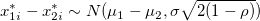 (4.22) これによると、平均的に効果があるか（あるいは逆効果か）どうかは 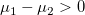 かどうかの問題であって、相関
の問題ではないことが分かる。相関
一方、
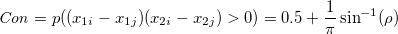 (4.35) で定義される同順率は、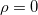 のとき 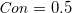 となり、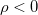 では 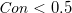 となる。 つまり、 は処置前から処置後にかけて集団内での相対的な順位が入れ替わる確率が5割を切る点として解釈できる。処置前値と処置後値の相関がゼロや負では「不安で受けられない」というのは、絶対的な得点の変化に関する議論ではなく、相対的な順位の入れ替わりを巡る議論であるということになる。
同様の問題は、交差遅延効果モデルや同時効果モデルにより「経時変化」について議論する際にも当てはまる。
メモここまで
処置前と処置後得点の標準偏差が共通 であるとき、差得点のSD 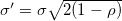 とする。
| 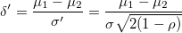 | (4.25) |
| 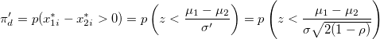 | (4.28) |
| 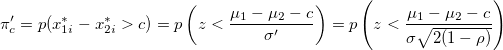 | (4.31) |
| (4.35) |
処置前と処置後のSDを 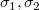 とすると、 差得点のSD 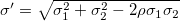 となる。
Footnotes
| はじめての統計データ分析 |